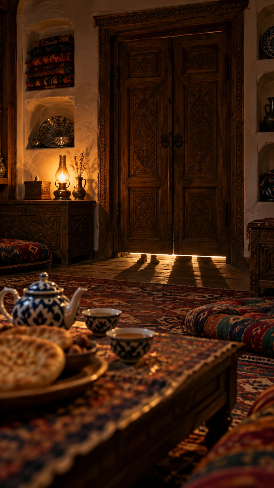

Eshik
8 sOvozBugun kechasi eshigingni ikki mehmon taqillatadi.
Video prompti (Veo / Kling, 8 soniya)
8-second clip, calm natural pace, the motion fills all 8 seconds. Static camera with a very slow push-in toward the carved wooden double door. Three slow, heavy knocks on the door from outside: with each knock the door panels tremble slightly and fine dust floats in the warm lamp light. Under the door, in the bright strip of light, the small pair of feet and the large pair of feet shift slightly and their long shadows on the floor move a little. The oil lamp flame flickers gently, the steam from the piyola rises slowly. The door stays closed, nobody enters. Quiet, mysterious evening mood, realistic motion, no camera shake, no text.